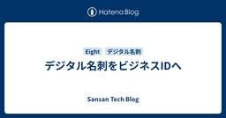
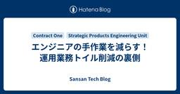

Sansan Tech Blog
https://buildersbox.corp-sansan.com/
Sansanのものづくりを支えるメンバーの技術やデザイン、プロダクトマネジメントの情報を発信
フィード

デジタル名刺をビジネスIDへ
Sansan Tech Blog
こんにちは。Eightのサーバーサイドエンジニアをしている井上です。 もうすぐ RubyKaigi ですね！昨年に続き、今年も参加予定なので、Rubyの未来や松山の街を楽しみにしています。 buildersbox.corp-sansan.com さてEightは今、名刺管理だけではなく名刺交換も行える「名刺アプリ」としてデジタル名刺に注力しています。 デジタル名刺の交換としてQRコードやタッチ名刺交換といったさまざまな手段を提供していますが、紙の名刺交換をデジタルで置き換えるだけでなく、デジタルだからこそ実現できる新たな価値の提供にも取り組んでいます。 その1つとして、今回はデジタル名刺ログイ…
2日前

エンジニアの手作業を減らす！運用業務トイル削減の裏側 1
1
Sansan Tech Blog
こんにちは。本記事は技術本部 Strategic Products Engineering Unit Contract One Devグループの松永と高橋からお届けします。本記事では、「Contract One運用業務のトイル削減」における、二つの施策をご紹介します。具体的には、松永から「テナント作成予約機能」について、そして高橋から「契約締結機能における運用業務の自動化」についてご紹介します。
6日前

Npgsql を用いたコネクションプール : そのコネクションは本当に使い回される？
Sansan Tech Blog
こんにちは。技術本部 Sansan Engineering Unit の市川です。2020年に新卒入社してから約5年間、法人向けサービスSansanのWebアプリの開発に取り組んでいます。最近はサービスで利用する汎用処理を社内ライブラリ化したり、親知らずを抜いた翌日にリリースするなど精力的に活動しています。Sansan ではフレームワークに .NET Framework、DB に PostgreSQL を使用しており、データプロバイダーには Npgsql を採用しています。今回はその Npgsql を用いたコネクションプールについて悩まされたため、Sansan で実際に起きていた問題と原因、そ…
11日前
Dataformで同名テーブルを作る方法と単体テストの書き方
Sansan Tech Blog
データ戦略部門のウチウゾウです。今月、地方拠点の開発体制強化施策の一環で、中部支店に異動してきました。今回は、Dataformで異なるデータセット、同名のテーブルを作成する方法について、単体テストの書き方も含めて紹介します。
12日前
Matsuriba MAX 2025 にゴールドスポンサーとして参加しました！
Sansan Tech Blog
こんにちは。先月名古屋の中部支店に異動してきたデータ戦略部門のウチウゾウです。 2025年3月1日に、STATION Ai で、東海地方最大の学生エンジニアイベント「Matsuriba MAX 2025」が開催されました！ 🎉nxtend.connpass.com
12日前
今、Bill Oneで働く魅力
Sansan Tech Blog
VPoE 兼 インボイス管理サービス「Bill One」のプロダクト開発責任者の大西です。Bill Oneには長らくプロダクト開発責任者として関わってきましたが、しばらく別のことをやっていました。今回2年ぶりにBill Oneを担当することになったため、「今、Bill Oneで働く魅力」をお伝えしたいです。
12日前
SansanはMatsuriba Max 2025にゴールドスポンサーとして協賛します
Sansan Tech Blog
こんにちは。名古屋にある中部支店に所属している技術本部 研究開発部 ArchitectグループのKAZYこと新井です。 このたび、Sansanは東海地方最大の学生エンジニアイベント「Matsuriba MAX 2025」にゴールドスポンサーとして協賛することになりました！🎉 Matsuriba MAXは、学生・団体・企業がつながり、エンジニアとしての学びを発散する場として開催されるイベントです。今年のテーマは「あなたの"やりたい"をMAXに引き出す祭り」。技術を学び、アウトプットする楽しさを共有できる場になることを期待しています。
16日前
【インタビュー】中部で始まる新たな挑戦。宮地 宏一さんに聞く
Sansan Tech Blog
Sansanの中部支店に新たなメンバーが加わります。本社での経験を経て、地元・愛知への思いを胸に異動を決めた宮地さん。彼がどのような経緯で中部支店への異動を決意し、これからどんな挑戦を描いているのか。同じく中部支店で勤務し、宮地さんが所属するチームリーダーを務める新井が、宮地さんとの関係性を交えながら、その思いに迫りました。
17日前
Contract OneのKotlinをバージョン2.1へアップデートしました
Sansan Tech Blog
こんにちは。技術本部 Strategic Products Engineering Unit Contract One Devグループの髙野です。2024年4月に新卒でSansan株式会社へ入社し、契約データベース「Contract One」の開発をしています。5人チームのリーダーとして、新規機能開発に向き合っています。 Contract Oneでは長らくKotlin 1.7.21を使用してきましたが、社内ハッカソンでKotlin 2.1へのアップデートを行ったので、紹介します。 buildersbox.corp-sansan.com
19日前
「Eight」のサーバーサイドエンジニアとして中途入社しました
Sansan Tech Blog
2024年に名刺アプリ「Eight」のサーバーサイドエンジニアとしてSansan株式会社へ入社した、技術本部 Eight Engineering Unit Product Devグループの菅間です。入社して半年が経ったところで、なぜEightを選んだのか、実際に働いてみてどうだったのかについて記事を書きたいと思います。 なぜEightを選んだのか 私がEightを選んだ理由は、「ビジネスインフラ」となるプロダクトの開発に携わりたいと考えたからです。 名刺はビジネスにおける最初の接点であり、多くのビジネス機会の起点となります。Eightはこの名刺管理の領域で主にサービスを展開していますが、それだ…
23日前
【R&D DevOps通信】Google Compute Engine + GPUで動作するMLサービスの基盤を刷新した話（完結編）
Sansan Tech Blog
技術本部 研究開発部 Architectグループの島です。 前回の記事の続きで、完結編です。Sansan内製の名刺OCRである「NineOCR」の基盤を改良します。 buildersbox.corp-sansan.com 筆が進まないまま前編から1年経ちそうで慌てて書いている次第ですが、そうこうしているうちに、実は更に新しいシステム構成にする話が挙がってきまして、なんとかその前に話を完結させておきます。あくまで取り組んだ当時の判断として開発した内容を以下ご紹介します。
24日前
ローカル開発拠点のリアル-SaaS企業3社が語る、プロダクト組織づくり・キャリアの挑戦-登壇レポート
Sansan Tech Blog
こんにちは。技術本部研究開発部ArchitectグループのKAZYこと新井です。 先日名古屋で行われたイベントに登壇しました。 今回のブログはそのイベントレポートです。 登壇の背景 今回、株式会社スタメンさんからお声がけをいただき、地方拠点をテーマとしたイベントに登壇する機会をいただきました。2022年に中途入社して以来、名古屋の拠点で活動してきた私にとって非常に嬉しい機会でした。 イベントについて ローカル開発拠点のリアル-SaaS企業3社が語る、プロダクト組織づくり・キャリアの挑戦-というタイトルのイベントです。 stmn.connpass.com
1ヶ月前
Denoで作るチーム開発生産性向上のためのCLIツール
Sansan Tech Blog
こんにちは。Sansan株式会社でエンジニアをしている伊藤です。 契約データベース「Contract One」の開発を担当しています。 Contract Oneの開発チームでは日々開発生産性向上について向き合っています。運用作業の自動化や開発体験の向上などを行なっていますが、その一環として行なった活動として「Denoで作るチーム開発生産性向上のためのCLIツール」というテーマでまとめてみます。12月に弊社で開催したTypeScriptのイベントで登壇した内容を詳細に紹介します。 課題 プロダクト開発では、プロダクションコード以外にも運用や開発効率向上のための周辺コードを書く場面があると思います…
1ヶ月前
NGK 2025S LT大会発表レポート
Sansan Tech Blog
こんにちは、研究開発部 Architectグループで内定者インターンをしている上田です。 私は名古屋にあるSansan株式会社中部支店に所属しており、岐阜から通っています。岐阜に比べて名古屋は暖かいのでかなり通いやすくなってきてます。普段趣味でイベントに足を運んでいるのですが、名古屋で毎年1月頃に開催されるNGK（Nagoya Godo Konshinkai）に初めて参加したので、参加レポートを綴ろうと思います。
1ヶ月前
Vol. 18 Bill One 開発 Unitブログリレー2024終幕
Sansan Tech Blog
はじめに こんにちは！技術本部 Bill One Engineering Unitの樋口です。 最近はRaspberry Pi 5を利用したNASを作ったり、Touch IDを外付け [^1] したりして遊んでます。 さて、2024年11月24日に投稿した Vol.00 Bill One 開発 Unit ブログリレー2024を開催&アーキテクチャConference 2024に協賛します！ - Sansan Tech Blog を皮切りにスタートしたBill One 開発 Unit ブログリレー2024ですが、エンジニアに加えてPdM・デザイナーと、開発に関わる多くのメンバーが参加し計17本の…
1ヶ月前
Vol. 17 四段階法で考えるエンジニアの併走型支援
Sansan Tech Blog
本記事はBill One 開発 Unit ブログリレー2024の第17弾になります！ 目次 目次 はじめまして 併走型支援とは 山本五十六の「四段階法」 「させてみる」と「フィードバックする」をループして自走を促す 1. まずは小さめのタスクから「させてみる」 2. できた成果をすぐ「フィードバックする」 3. 次の少し大きなタスクを再び「させてみる」 4. できた成果を再び「フィードバックする」 四段階法の具体例（開発編） 1. やってみせる 2. 言って聞かせる 3. させてみせる 4. フィードバックする 四段階法の具体例（マネジメント編） 1. やってみせる 2. 言って聞かせる 3.…
2ヶ月前
Sansan Global Development Center’s Digi Team Surely Packs a Punch
Sansan Tech Blog
More than a year has passed since Team Pacman was established here in Sansan Global Development Center (SGDC) as our very own Digitization Team. The journey is still long for the team but we have come so far.I am Chris, one of the Engineering Managers here in SGDC. I had the pleasure of working with…
2ヶ月前
Vol. 16 Bill Oneにおけるデザインシステムの取り組みの現在地
Sansan Tech Blog
本記事はBill One 開発 Unit ブログリレー2024の第16弾です！！ 他の記事もぜひぜひご覧ください！！ こんにちは、技術本部 Bill One Engineering Unitの江川です。 「Bill One」では2023年頃より、Sansan株式会社におけるいくつかのプロダクトをまたいだデザインシステム「One Design System」の取り組みを行っています。 今回は、このOne Design Systemの取り組みのこれまでとこれからについてお話していきたいと思います！
2ヶ月前
【Turning Encounters into Innovation in Cebu】Vol. 3: Growing as a Career Game-Changer
Sansan Tech Blog
In today's dynamic tech landscape, the right workplace can set you on a trajectory for both professional growth and personal fulfillment. At Sansan Global Development Center (SGDC), we're not just building software; we're building a culture that empowers innovation, encourages collaboration, and cre…
2ヶ月前
Vol. 15 「次回も開催したい！」SansanとサイボウズがOSTで深めた学びと繋がりの価値
Sansan Tech Blog
この記事は、Bill One 開発 Unit ブログリレー2024 の第15弾になります！ はじめに 技術本部 Bill One Engineering Unitの川元です！ 名前の読みは川元（かわもと）ですが、元の字から「げん」と呼ばれており、本名で呼ばれることはごく稀です！ もともとエンジニアとしてSansan株式会社に入社した私は現在、エンジニアリングマネジャーとして事業や組織に関わる傍ら、直近ではBill Oneエンジニアの採用広報としての取り組みにも尽力しています。 今回のブログでは、Sansanとサイボウズ株式会社が共同で開催した Sansan VS サイボウズ - 品質向上Tip…
2ヶ月前
KEDAを導入してAWS SQSキューとHTTPリクエストベースのスケーリングを実現する
Sansan Tech Blog
こんにちは、年始に研究開発部ArchitectグループからSPEU（Strategic Products Engineering Unit） SREグループに異動したジャン（a.k.a jc）です。 本記事では、異動前に研究開発部Architectグループが開発・運用している、Circuitと呼ばれるKubernetes基盤の管理にイベント駆動のスケーリングを実現するために、KEDAを導入した際の概要を紹介します。
2ヶ月前
個人目標と360度FBでチームの成長速度を向上させる取り組み
Sansan Tech Blog
こんにちは。Sansan株式会社でエンジニアをしている伊藤です。契約業務をDXで革新するプロダクト「Contract One」の開発業務を担当しています。私は現在、5人のチームに所属し、新規機能の開発とチームマネジメント業務を担っています。今回は、私のチームで実施している「個人目標」と「360度FB」の取り組みについて紹介します。エンジニアリング組織において、個々のメンバーが成長し続けること、そしてチーム全体がその成長を最大化できる環境を作り出すことは重要だと考えています。今回、「個人目標」と「360度FB」という2つの取り組みを導入し、個人とチームの成長速度を上げる試みを実施しました。その内…
2ヶ月前
契約書更新履歴をリファクタリングした話
Sansan Tech Blog
こんにちは、技術本部 Contract One Devの小松です。 Contract One Devチームでは、2024年1月から2024年10月の約10カ月間に渡り、契約書更新履歴のリファクタリングに取り組んできました。 本記事では、このリファクタリングの背景から具体的な進め方についてまでを記載しプロジェクト全体を振り返ります。 時期によりメンバーが変動する形でしたが、総勢7名で取り組んだプロジェクトになります。このプロジェクトは多くのメンバーの工夫と貢献によって支えられてきました。そのため、本ブログ記事では、すべての活動をチームの取り組みとして記述します。
2ヶ月前
Vol. 14 BtoCからBtoBプロダクトに転向した際に気づいた、転職で考慮すべき条件
Sansan Tech Blog
この記事は、Bill One 開発 Unit ブログリレー2024の第14弾になります！ ぶっちゃけ、働くならBtoCとBtoBどっちがいいの？就活や転職で仕事を探しているエンジニアの中で「BtoCプロダクトがいい」と仕事を探したことがある方はいますか？ 何を隠そう、私も「BtoC以外考えない」という時期がありました。実際に、これまで5つのプロダクトで9年以上BtoC向けプロダクトのプロダクトマネジャーを経験してきました。そう、Sansanに入社するまでは。こんにちは、Sansanのインボイス管理サービス「Bill One」で、受領領域のプロダクトマネジャーをしている森本です。2024年8月に…
2ヶ月前
Yup to Zod ~スキーマバリデーションライブラリの移行~
Sansan Tech Blog
Contract One Dev グループの井上です。本年もどうぞよろしくお願い申し上げます。私たちのチームでは、先日、「Contract One Cheat Day」と銘打って社内ハッカソンを開催しました。 社内ハッカソンの内容については、社内ハッカソンを開催したら、止まっていた改善が色々進んだ話: Contract One Cheat Day - Sansan Tech Blogをご覧ください。 本記事では、そんな社内ハッカソンにおける取り組みの一つ、”Zod導入”について書いていきます。
2ヶ月前
Vol. 13 Bill Oneの要件定義・設計プロセスを統一した話
Sansan Tech Blog
Bill One 開発 Unit ブログリレー2024の第13弾になります！技術本部 Bill One Engineering Unitの佐橋です。Bill Oneでは昨年の10月に要件定義・設計プロセスを統一しました。 同じ課題感を持つメンバーが集まり、約6カ月をかけて検討とPoCを行った後に本導入しました。今回はプロセスを統一した理由と、どのようなプロセスを統一したのかについてご紹介します。
2ヶ月前
フレーキーテストをCIで検知・アラートさせる仕組みを作った話（JUnit, Vitest）
Sansan Tech Blog
明けましておめでとうございます。 2024年は皆さんにとってどんな年だったでしょうか。 私たちSansanでは、本社移転により業務環境が大きく変わり、特に印象的な年になりました。 2025年も、より素晴らしい年になるように頑張りたいですね。こんにちは。技術本部 Contract One Dev の川崎です。現場の習慣を変える、契約データベース「Contract One」の開発業務を担当しています。フレーキーテストをご存知でしょうか。JetBrains社の記事にフレーキーなテストとは以下と定義すると記載があります。 *1Flaky なテストは、コードまたはテストそのものに変更がないにもかかわらず…
2ヶ月前
Vol. 12 3つの役割から学んだプロダクトへの向き合い方
Sansan Tech Blog
この記事は、Bill One 開発 Unit ブログリレー2024の第12弾になります！ はじめましての私 技術本部 Bill One Engineering Unitの杉田です！ 名前が允（あたる）なので、周囲からは「あたるん」と呼ばれております！ 元々エンジニアとしてSansan株式会社に入社した私は現在、エンジニアリングマネジャーとして事業や組織に関わる傍ら、PdMから案件の一部においてプロダクトマネジメントを委譲されています。 そのため今の私はエンジニア、エンジニアリングマネジャー、プロダクトマネジャーという3つの役割を担いながら、日々プロダクト開発と向き合っています。それぞれの役割で…
2ヶ月前
社内ハッカソンを開催したら、止まっていた改善が色々進んだ話: Contract One Cheat Day
Sansan Tech Blog
こんにちは。技術本部 Strategic Products Engineering Unit Contract One Devグループの中川です。契約データベース「Contract One」の開発マネジャーをしています。 この記事では「Contract One」の開発組織で停滞していた技術課題や改善案に真剣に向き合う1日限定の社内ハッカソンを開催しました。短期間で成果を出し、エンジニアたちのモチベーションとパフォーマンスを爆発させたこの取り組み。その背景から成果、運営の工夫まで、全貌をぜひチェックしてください！
2ヶ月前